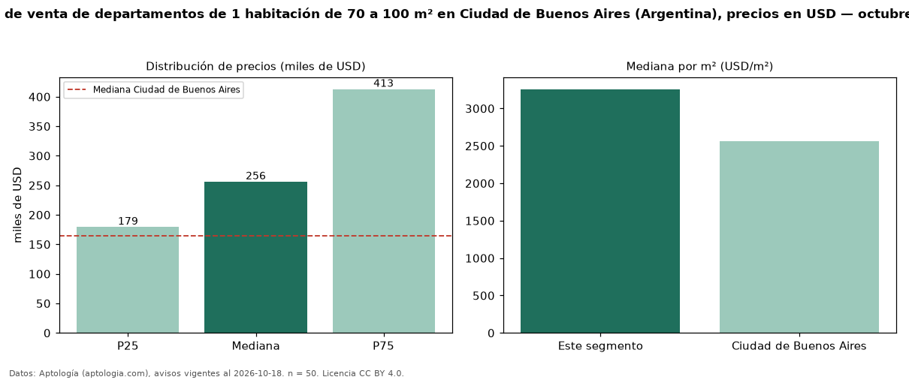

Precio de venta de departamentos de 1 habitación de 70 a 100 m² en Ciudad de Buenos Aires (Argentina), precios en USD — octubre 2026
Con 50 avisos vigentes, el precio mediano de departamentos de 1 habitación de 70 a 100 m² en venta en Ciudad de Buenos Aires (Argentina) es USD 256.000. Eso es 123 % más que la mediana de los departamentos de 1 habitación en venta de Ciudad de Buenos Aires (USD 115.000, n = 1.924); este segmento reúne el 3 % de esos avisos. Por metro cuadrado, la mediana es USD 3.257/m² (n = 45), 23 % por encima de los departamentos de 1 habitación en venta de Ciudad de Buenos Aires (USD 2.647/m²). El área mediana anunciada es 76 m². La mitad central de los avisos va de USD 179.250 a USD 412.750 (razón 2,3), una dispersión alta. La mediana de todos los departamentos en venta de Ciudad de Buenos Aires es USD 165.000 (+55 % de diferencia). Datos: Aptología (aptologia.com), CC BY 4.0 — https://www.aptologia.com/ar. Archivos: PDF, CSV con las cifras y gráfica PNG.

| Avisos únicos | 50 |
|---|---|
| Percentil 25 | COP 179.250 |
| Mediana | COP 256.000 |
| Percentil 75 | COP 412.750 |
| Mediana por m² | COP 3.257 |
Fuente: avisos vigentes de portales inmobiliarios recopilados por Aptología, deduplicados (mínimo 30 avisos únicos por celda). Precios pedidos, no cerrados. Fecha: 2026-10-18.